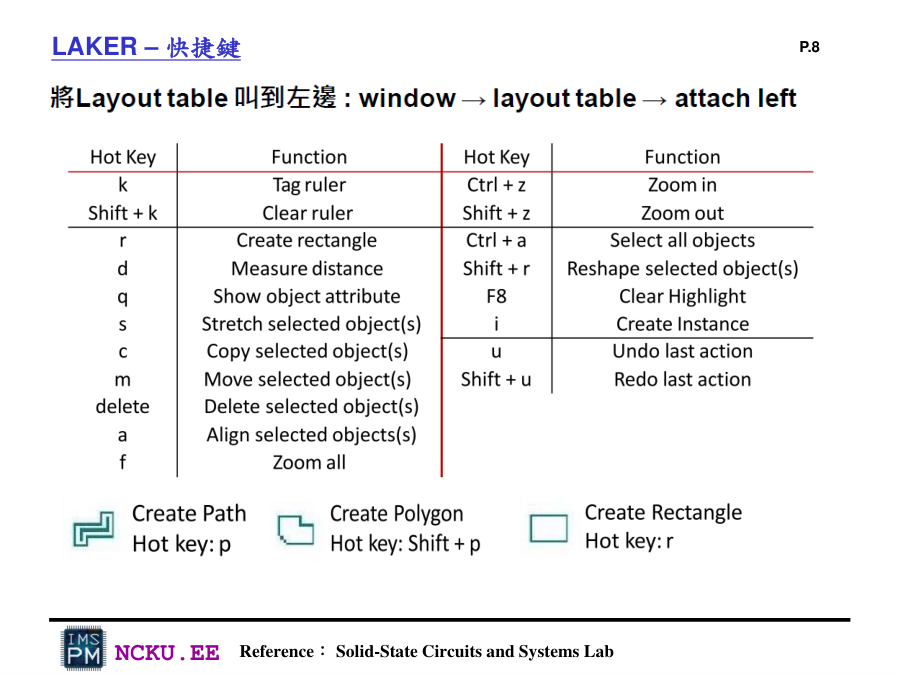
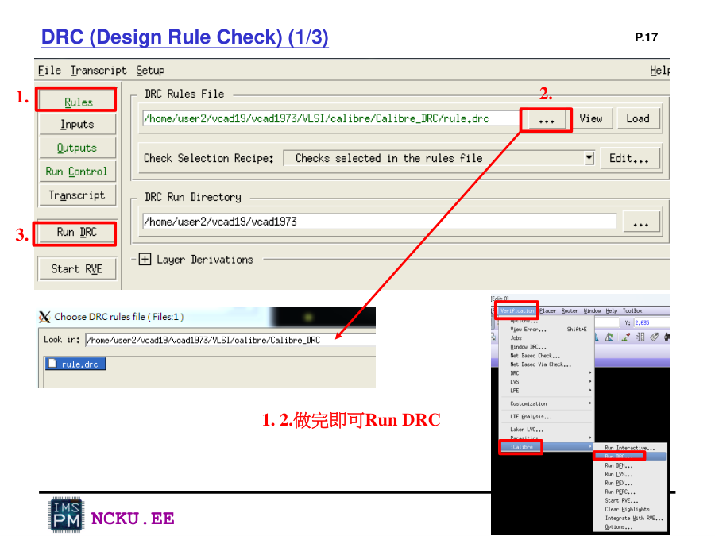
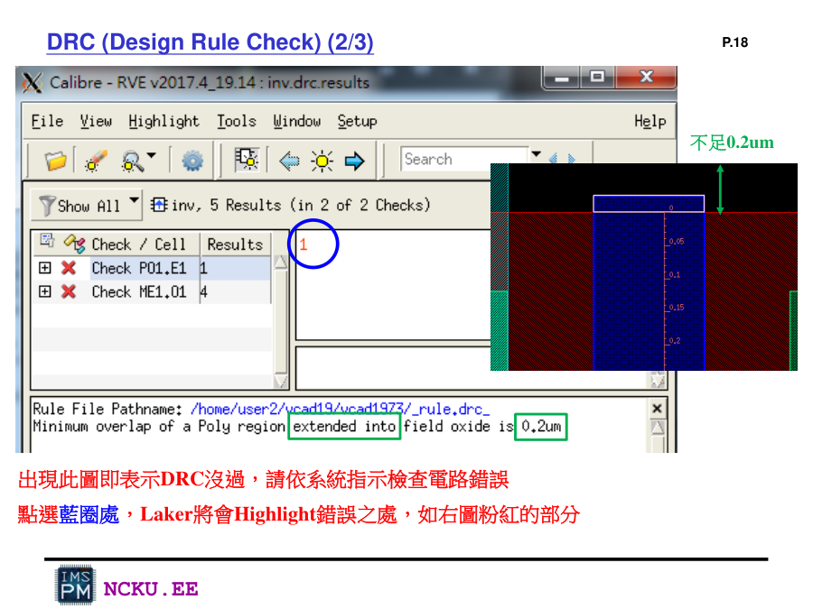
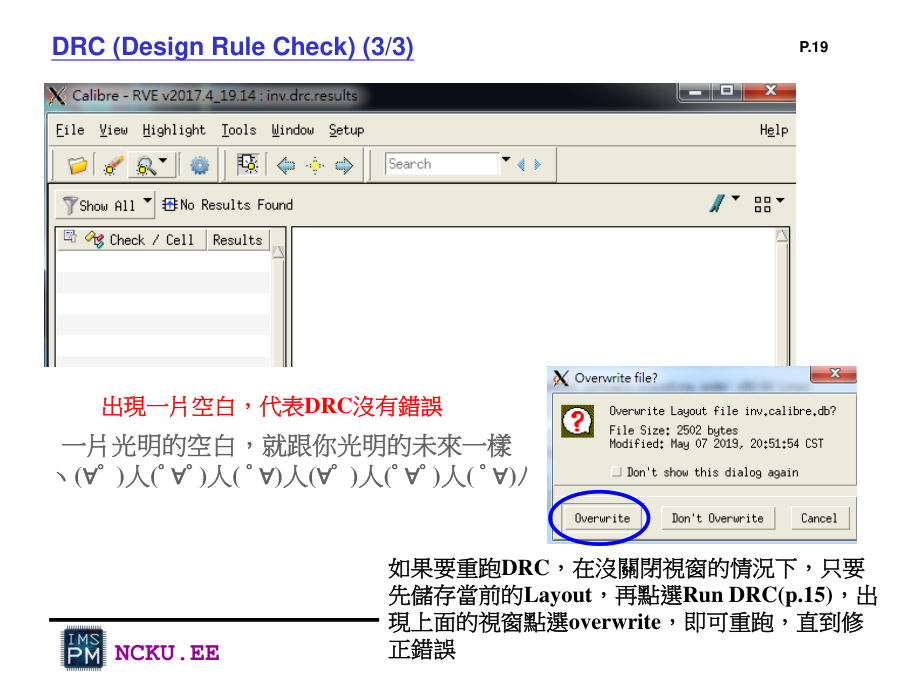
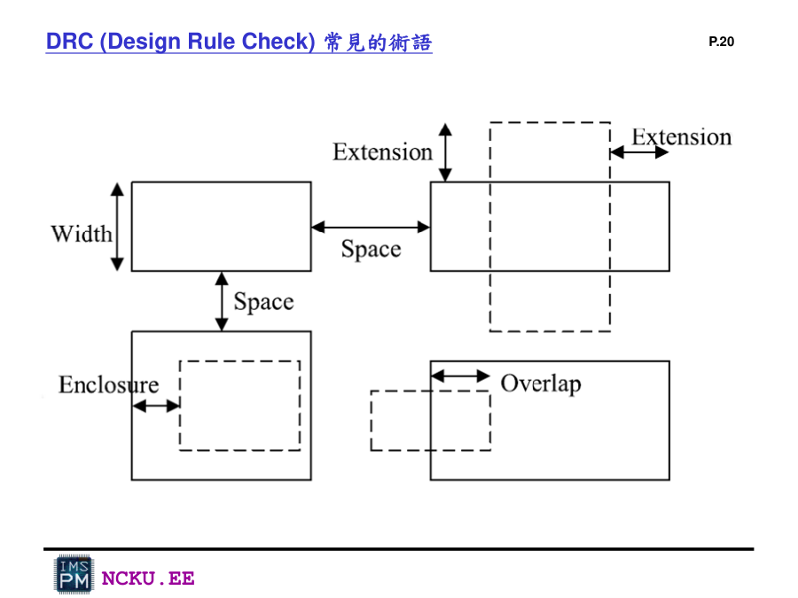
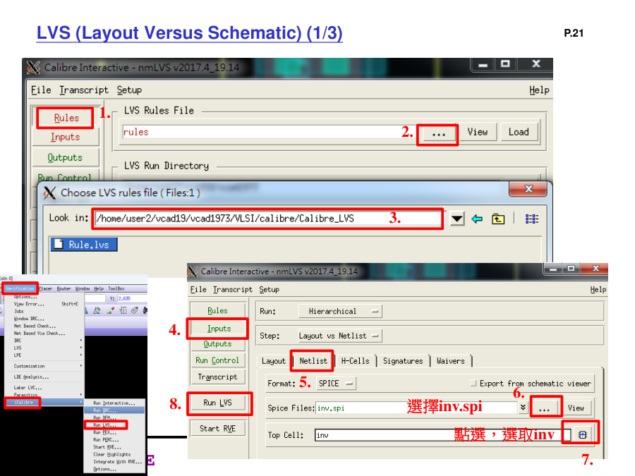
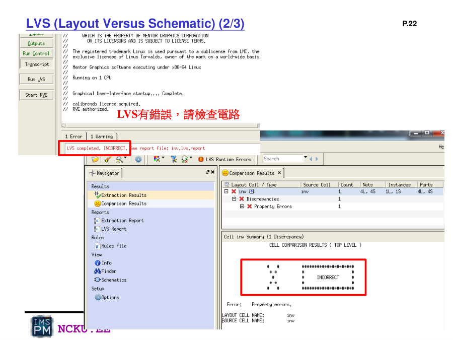
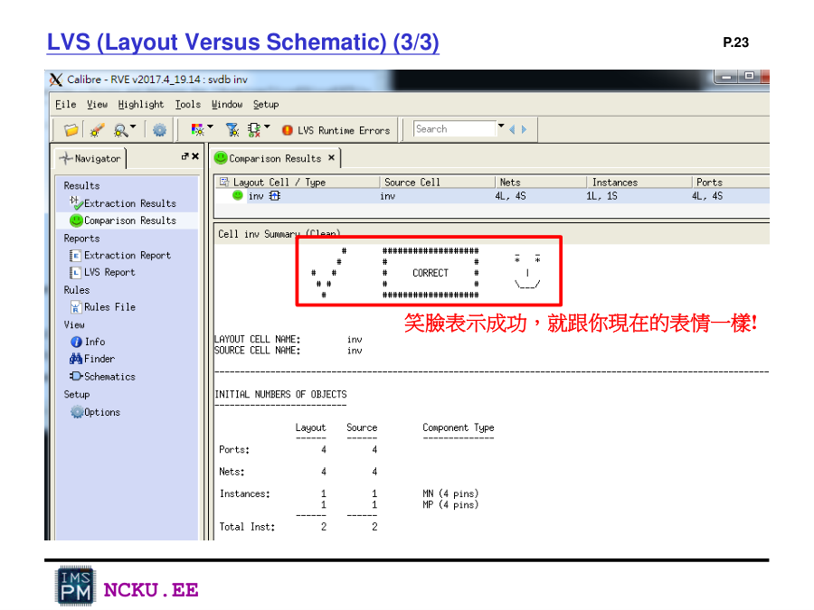
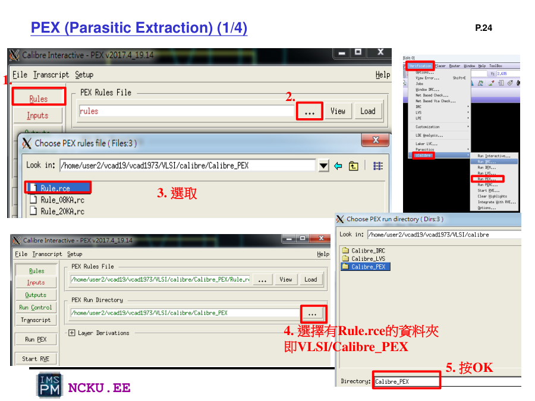

Laker 操作手冊整合
包含啟動、建 Library/Cell、Layer Level、DRC、LVS、PEX 與 HSPICE。
啟動 Laker
source /usr/cad/synopsys/CIC/laker_oa.cshrc
laker &每次重新登入伺服器都需重新 source 環境。
建立 Library / Cell
Library → New
Technology file 選 laker_gary.tf。
Technology file 選 laker_gary.tf。
Cell → New
建立 HA、DFF、NAND3、INV 等 layout cell。
建立 HA、DFF、NAND3、INV 等 layout cell。
Open layout view
開始建立 DIFF、PO1、CONT、Metal、Pin Text。
開始建立 DIFF、PO1、CONT、Metal、Pin Text。

Lab9：Create New Library / Cell
DRC / LVS / PEX 摘要
| 工具 | 目的 | 成功判斷 | 常見錯誤 |
|---|---|---|---|
| DRC | 檢查 layout 幾何規則 | No Results Found / 空白 | spacing、width、extension、enclosure |
| LVS | 比對 layout 與 schematic/SPICE | Correct / 笑臉 | open、short、port mismatch、property error |
| PEX | 抽取寄生 R/C/CC | 產生 .pex.netlist | 腳位順序、include 漏放 |
| HSPICE | pre/post simulation | job concluded | subckt、model、node 錯 |

Lab9 操作截圖

Lab9 操作截圖

Lab9 操作截圖

Lab9 操作截圖

Lab9 操作截圖

Lab9 操作截圖

Lab9 操作截圖

Lab9 操作截圖